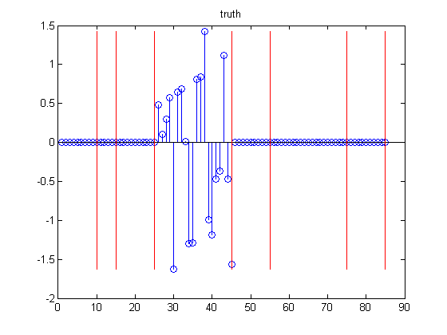
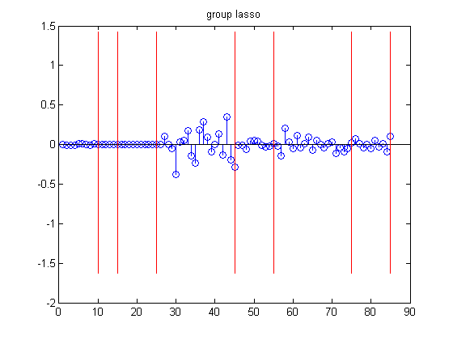

Contents
function linregGroupLassoDemo()
% Demo of group lasso compared to vanilla lasso %PMTKauthor Mark Schmidt setSeed(1);
Make data
Generate categorical features
nInstances = 50; %nStates = [10 5 10 5 20 5 10 5 20 5 10 20 10]; nStates = [10 5 10 20 10 20 10]; % Number of discrete states for each categorical feature X = zeros(nInstances,length(nStates)); offset = 0; for i = 1:nInstances for s = 1:length(nStates) prob_s = rand(nStates(s),1); prob_s = prob_s/sum(prob_s); X(i,s) = sampleDiscrete(prob_s); end end % Now convert categorical matrix to binary (1ofK) encoding X_ind = dummyEncoding(X, nStates); % Now make sparse weight vector, where sparsity is in groups offset = 0; nVars = sum(nStates); wTrue = zeros(nVars, 1); for s = 1:length(nStates) wTrue(offset+1:offset+nStates(s),1) = (rand > .75)*randn(nStates(s),1); offset = offset+nStates(s); end % Make data y = X_ind*wTrue + 1*randn(nInstances,1); Xtrain = X_ind; ytrain = y; [Xtrain, mu, s] = standardizeCols(Xtrain); ytrain = centerCols(ytrain); if 0 Xtrain = X_ind(1:floor(nInstances/2),:); ytrain = y(1:floor(nInstances/2)); Xtest = X_ind(floor(nInstances/2)+1:end,:); ytest = y(floor(nInstances/2)+1:end); end
Set up groups
offset = 0; groups = zeros(nVars, 1); for s = 1:length(nStates) groups(offset+1:offset+nStates(s),1) = s; offset = offset+nStates(s); end nGroups = max(groups);
setup CV
predictFn = @(w, X) X*w; lossFn = @(yhat, y) sum((yhat-y).^2); useSErule = false; Nfolds = 3; maxLambda = lassoMaxLambda(Xtrain, ytrain); lambdasL1 = linspace(maxLambda, 0, 20); maxLambda = groupLassoMaxLambda(groups, Xtrain, ytrain); lambdasGL1 = linspace(maxLambda, 0, 20);
Fit
fitFn = @(X,y,lambda) linregFitL1InteriorPoint(X,y, lambda); [wHatLasso] = fitCv(lambdasL1, fitFn, predictFn, lossFn, Xtrain, ytrain, Nfolds, useSErule); fitFn = @(X,y,lambda) linregFitGroupLassoProj(X,y, groups, lambda); [wHatGroup] = fitCv(lambdasGL1, fitFn, predictFn, lossFn, Xtrain, ytrain, Nfolds, useSErule);
Plot
figure; stem(wTrue); title('truth'); drawGroups(nStates, wTrue); printPmtkFigure('groupLassoTruth') figure; stem(wHatGroup); title('group lasso'); drawGroups(nStates, wTrue); printPmtkFigure('groupLassoGroup') figure; stem(wHatLasso); title('lasso'); drawGroups(nStates, wTrue); printPmtkFigure('groupLassoVanilla') 

end function drawGroups(nStates, wTrue) hold on for i=1:length(nStates) j = sum(nStates(1:i)); h=line([j j], [min(wTrue(:)) max(wTrue(:))]); set(h,'color','r','linewidth',1); end end